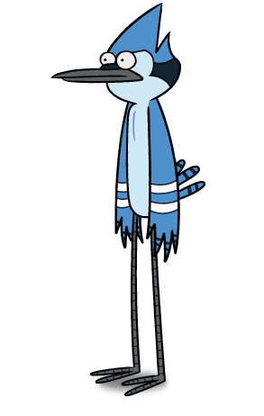

Julio Méndez Ayala
About me...
Soy un joven-adulto de 22 años de edad, nací en la peligrosa y sobrepoblada Ciudad de México. Mis padres son personas muy trabajadoras y hasta la fecha me apoyan en todo lo que haga. Tengo un hermano mayor, que vive de las historias que le cuenta la gente (Taxista de Uber).
